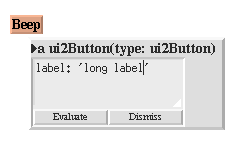

Shrink-wrapping
A shrink-wrap morph shrinks to the smallest size that accommodates its submorphs.
Example: buttons:

|
Shrink-Wrapping
It is sometimes desirable for the size of a morph to depend on the sizes of its
submorphs. For example, the size of a button should depend on the size of its label.
(It would be annoying if it didn't; the programmer would have to manually resize
the button after changing the label.) A morph designated as shrink-wrap shrinks (or
grows) to the smallest size that accommodates the size requirements of its
submorphs.
|